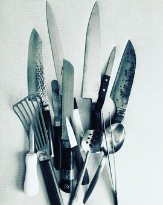

Experience
I’ve been toiling around professional kitchens for the better part of 17 years, cooking everything from French to Vietnamese, to Italian. Working with food has been an amazing experience, but I'm ready for the next chapter in my life.
Encounters in the culinary world
I have led kitchens as a Sous Chef, managing teams of cooks. Preparing menus, ordering, inventory, and making schedules. I would like to take my skills from the kitchen and apply them to coding.
All in all, cooking has been an amazing experience, and I have a life lesson.